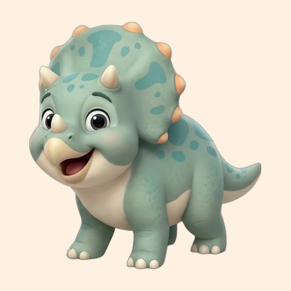
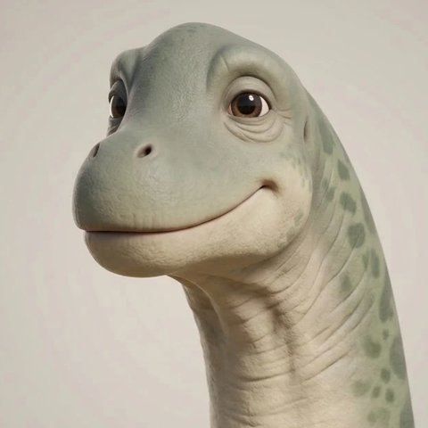
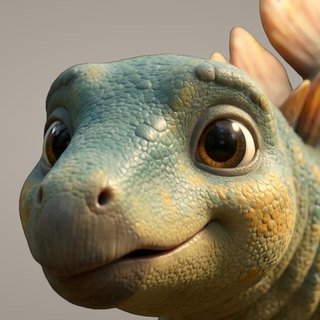

Leo & Trixie Adventures

Chào mừng đến với Leo & Trixie Adventures!
Chào mừng quý thầy cô, các ba mẹ và các bé đến với Leo & Trixie Adventures! 🦕
Ở đây có Leo, cậu bé mê khám phá với chiếc ba lô nhỏ, và Trixie, bé khủng long ba sừng tinh nghịch, người bạn thân nhất của Leo. Mỗi tập phim là một chuyến phiêu lưu đầy màu sắc, nơi hai bạn cùng tìm hiểu thiên nhiên, động vật và khoa học qua những câu hỏi "Vì sao?" thật đáng yêu.
- 🌿 Kiến thức đúng, dễ hiểu, được chọn lọc kỹ cho các bé
- 🧡 Nuôi dưỡng sự tò mò, lòng tốt và tình bạn
- 👪 Để cả nhà cùng xem, cùng hỏi, cùng học
- 🔍 Dạy bé rằng nói "Mình chưa biết!" cũng là một phần của khoa học
Nhấn Đăng ký để không bỏ lỡ chuyến phiêu lưu mới nào của Leo & Trixie nhé! Nếu thấy kênh hữu ích, ba mẹ hãy chia sẻ đến những gia đình có bé yêu khám phá. Mỗi lượt chia sẻ là thêm một bạn nhỏ được học điều hay.
Được làm bằng cả trái tim bởi Make It Wrong Studio.
Welcome to Leo & Trixie Adventures!
Welcome, teachers, parents and little ones, to Leo & Trixie Adventures! 🦕
Meet Leo, a boy who loves to explore with his little backpack, and Trixie, a playful baby triceratops and Leo's very best friend. Every episode is a colorful adventure where the two friends discover nature, animals and science through the sweetest "Why?" questions.
- 🌿 Accurate, easy-to-understand facts, carefully chosen for kids
- 🧡 Nurturing curiosity, kindness and friendship
- 👪 Made for the whole family to watch, ask and learn together
- 🔍 Teaching kids that saying "I don't know yet!" is part of science too
Subscribe so you never miss a new Leo & Trixie adventure! If you find the channel helpful, please share it with families whose little ones love to explore.
Made with all our hearts by Make It Wrong Studio.
Các nhân vậtCharacters






Các tập phimEpisodes
- Tập 1Episode 1Khám Phá Khủng Long Ba Sừng TriceratopsDiscovering Triceratops, the Three-Horned Dinosaur
Leo và Trixie du hành về khoảng 68–66 triệu năm trước để làm quen với khủng long ba sừng Triceratops: ba chiếc sừng, tấm diềm xương, kích thước so với con người, nơi sống, thức ăn và cuộc sống từ quả trứng.
Leo and Trixie travel back to about 68–66 million years ago to meet the three-horned Triceratops: its three horns, bony frill, size compared with people, where it lived, what it ate and how life began from an egg.

- Ba chiếc sừng, diềm xương và mỏ của Triceratops
- Kích thước ước tính: dài khoảng 7–9 mét
- Triceratops là loài ăn thực vật
- Hóa thạch là manh mối của các nhà khoa học
- The three horns, frill and beak of Triceratops
- Estimated size: about 7–9 meters long
- Triceratops was a plant-eater
- Fossils are the clues scientists use
- Tập 2Episode 2Khám Phá Khủng Long Phiến Sừng StegosaurusDiscovering Stegosaurus, the Plated Dinosaur
Về cuối kỷ Jura, khoảng 150 triệu năm trước, làm quen với Stella – bạn Stegosaurus hiền lành: hai hàng tấm xương xếp so le, chiếc đuôi bốn gai, và câu hỏi "Stegosaurus có hai bộ não không?".
Head to the Late Jurassic, about 150 million years ago, to meet Stella, a gentle Stegosaurus: two rows of alternating back plates, a four-spiked tail, and the question "Did Stegosaurus have two brains?".

- Hai hàng tấm xương xếp so le và bốn gai đuôi
- Kích thước ước tính: dài khoảng 7–9 mét, nặng khoảng 3–7 tấn
- Ăn thực vật mọc thấp – thời đó chưa có cỏ
- Stegosaurus chỉ có MỘT bộ não, không phải hai
- Two rows of alternating plates and four tail spikes
- Estimated size: about 7–9 meters long, about 3–7 tonnes
- It ate low-growing plants – there was no grass yet
- Stegosaurus had just ONE brain, not two
- Tập 3Episode 3Khám Phá Khủng Long Cổ Dài BrachiosaurusDiscovering Brachiosaurus, the Long-Necked Dinosaur
Về cuối kỷ Jura, khoảng 154 triệu năm trước, gặp bé Bibi – Brachiosaurus nhỏ xíu, cùng người mẹ cao tới tận ngọn cây: vì sao gọi là "thằn lằn cánh tay", ăn lá trên cao mà không nhai, và bộ xương có khoang khí giống loài chim.
Visit the Late Jurassic, about 154 million years ago, to meet tiny Bibi the Brachiosaurus and her mother, who reaches the treetops: why it is called the "arm lizard", eating high leaves without chewing, and bones with air spaces like birds.

- Vì sao Brachiosaurus được gọi là "thằn lằn cánh tay"
- Đầu cao hơn 9 mét – to cỡ nào so với con người
- Ăn lá trên cao mà không cần nhai
- Những điều các nhà khoa học vẫn đang tìm hiểu
- Why Brachiosaurus is called the "arm lizard"
- A head more than 9 meters up – how big is that next to a person?
- Eating high leaves without chewing
- What scientists are still finding out
- Tập 4Episode 4Khám Phá Khủng Long Bọc Giáp AnkylosaurusDiscovering Ankylosaurus, the Armored DinosaurMớiNew
Về cuối kỷ Phấn Trắng, khoảng 67 triệu năm trước, làm quen với Anko – bạn Ankylosaurus nhỏ xíu, nhút nhát nhưng rất đáng yêu: vì sao gọi là "thằn lằn dính liền", bộ áo giáp bằng xương mọc ngay trong da, chiếc búa đuôi để tự vệ, và những người hàng xóm Triceratops.
Travel to the Late Cretaceous, about 67 million years ago, to meet Anko, a tiny, shy and very sweet Ankylosaurus: why it is called the "fused lizard", bony armor growing right in the skin, a tail club for defense, and its Triceratops neighbors.

- Vì sao Ankylosaurus được gọi là "thằn lằn dính liền"
- Những tấm xương mọc trong da tạo thành bộ áo giáp
- Búa đuôi rộng gần nửa mét dùng để tự vệ
- Ankylosaurus và Triceratops từng sống cùng thời, cùng nơi
- Why Ankylosaurus is called the "fused lizard"
- Bony plates in the skin form a suit of armor
- A tail club almost half a meter wide, used for defense
- Ankylosaurus and Triceratops lived at the same time and place
Gửi ba mẹ và thầy cô
- Leo, Trixie và các bạn khủng long (Stella, Bibi, Anko…) là nhân vật hư cấu. Các loài khủng long trong phim không phải lúc nào cũng sống cùng thời; chuyến đi qua Cổng Thời Gian là chuyến phiêu lưu tưởng tượng.
- Kiến thức về các loài khủng long trong video dựa trên bằng chứng cổ sinh vật học đã được công nhận; những con số như chiều dài, chiều cao, cân nặng là ước tính và được ghi rõ là ước tính, còn những điều khoa học chưa rõ được nói rõ là "chưa biết".
- Kênh được đặt là nội dung dành cho trẻ em trên YouTube.
- Video được thực hiện với sự hỗ trợ của công cụ AI; kịch bản và kiến thức do studio biên soạn và kiểm tra.
For parents and teachers
- Leo, Trixie and their dinosaur friends (Stella, Bibi, Anko…) are fictional characters. The dinosaurs in the show did not always live at the same time; the trip through the Time Gate is an imaginary adventure.
- The dinosaur facts in each video are based on accepted paleontological evidence; figures such as length, height and weight are estimates and are labeled as such, and open questions are clearly called "unknown".
- The channel is set as made for kids on YouTube.
- Videos are produced with the help of AI tools; scripts and facts are written and checked by the studio.